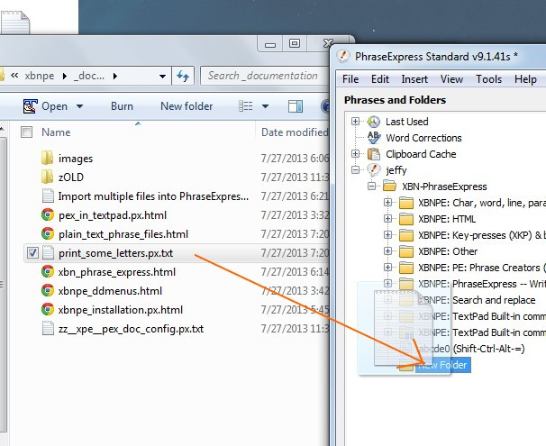
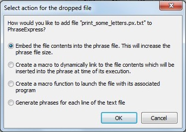
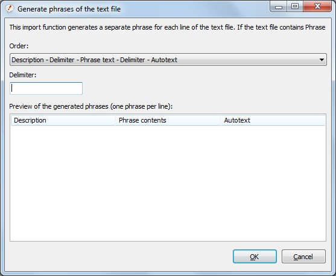
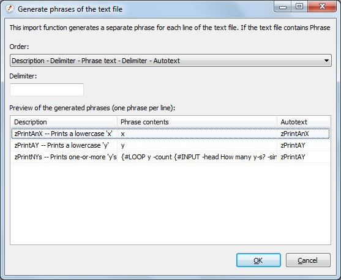

There are separate instructions for importing many phrase-files.
First, open Windows Explorer, and navigate to the directory in which the phrase-file exists (tip!). Move that window to the left side of your monitor. Then open PhraseExpress and move it to the right side of the monitor. Navigate to the folder in which the phrase-file should be imported. (In Windows Explorer, I call them "directories", and in PhraseExpress, I call them "folders").
BACK [PREV -- NEXT] Importing one phrase-file: Step-by-stepDelete the old folder in PhraseExpress (the one you're about to import!), then drag one-or-more phrase-files from Explorer to PhraseExpress, directly to the folder in which it should reside

BACK [PREV -- NEXT] Importing one phrase-file: Step-by-stepThis pops up the "Select action" dialog. Choose the bottom-most action: "Generate phrases for each line of the text file", then press [OK].
If you've dragged more than one file, there will be a checkbox at the bottom, to apply this choice to all files. Check it before proceeding.
Unfortunately, there is no way to permanently-configure any of these selections.

BACK [PREV -- NEXT] Importing one phrase-file: Step-by-stepThis is the "phrase-format dialog". The line-format and delimiter must be chosen.
First, choose the "Order" item
Description - Delimiter - Phrase text - Delimiter - Autotext
which is second-to-bottom item in the drop-down. This can be done with the mouse, or with the key-sequence
PGDN, UP
Unfortunately, when importing multiple files, all the settings in this dialog must be chosen for every file, every time you do an import. This, along with the inability to export, are the primary difficulties associated to programming outside of the PhraseExpress application.
BACK [PREV -- NEXT] Importing one phrase-file: Step-by-stepAll available "Order" options. In XBN-PhraseExpress, the only one you'll ever use is
Description - Delimiter - Phrase text - Delimiter - Autotext

BACK [PREV -- NEXT] Importing one phrase-file: Step-by-stepOnce field-order is chosen, then declare the delimiter character: "TAB".
Once the "Order" value is selected in the drop-down, press TAB to go to the "Delimiter" field and then type a "TAB" into it.

BACK [PREV -- NEXT] Importing one phrase-file: Step-by-stepNow that PhraseExpress knows how to parse this phrase-file, and the individual phrases appear in the dialog. Press [OK]

BACK [PREV -- NEXT] Importing one phrase-file: Step-by-stepThe phrases are imported. Open the folder to see the individual phrases. Consider sorting the parent folder, by right-clicking on it and selecting
Sort > By description > A->Z

BACK [PREV -- NEXT] Importing one phrase-file: Step-by-stepNote the first word in descriptions is the (duplicated) autotext for that phrase. Close PhraseExpress to complete the import process.